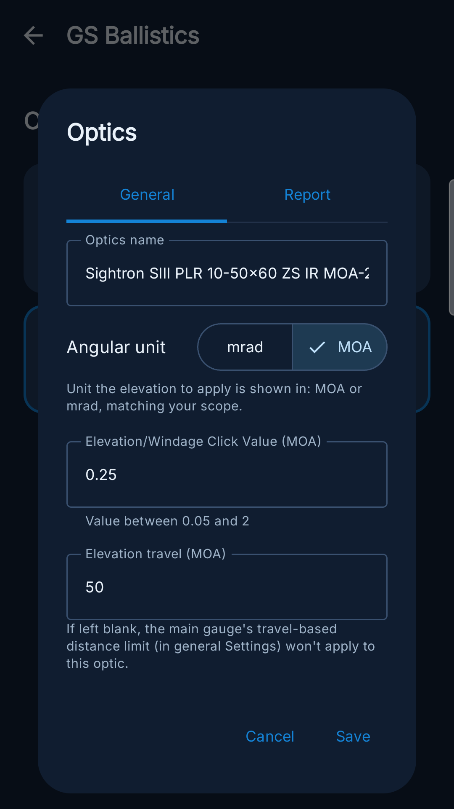
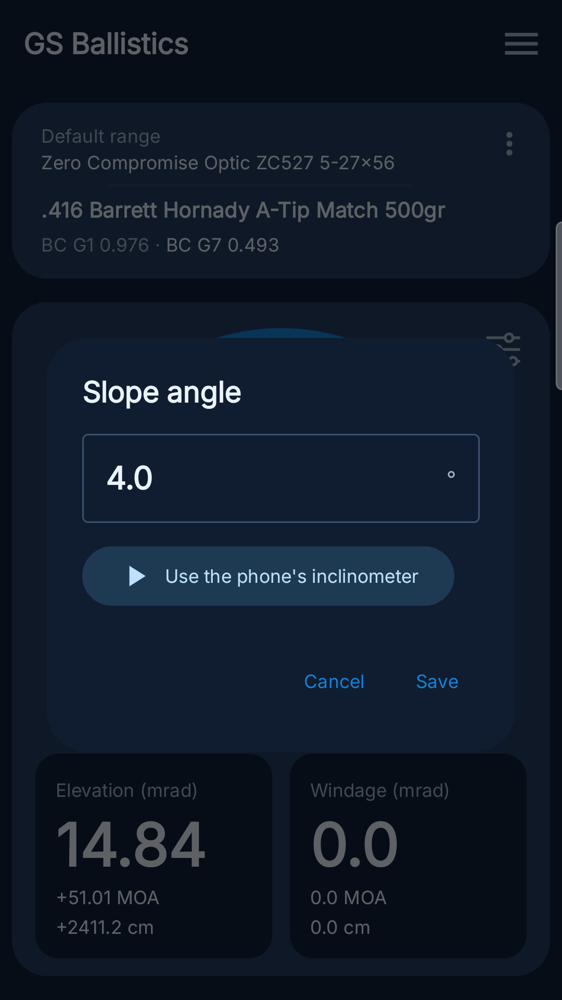
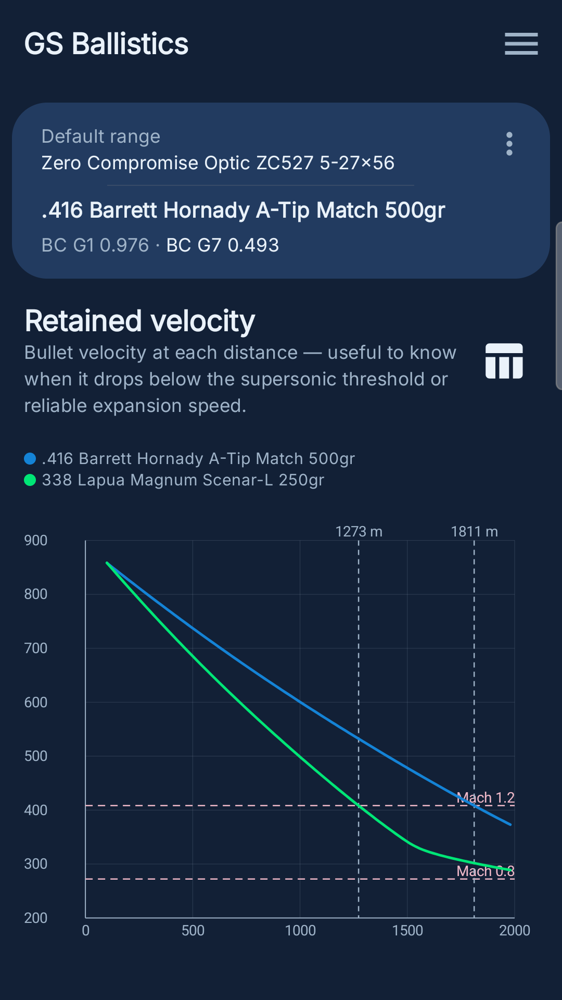

GS Ballistics
GS Ballistics è un'app Android per il tiro a lunga distanza. Invece di affidarsi a un'ipotesi sul campo, ti dà una tabella balistica verificata: integra numericamente resistenza dell'aria e gravità lungo l'intera traiettoria, con le tabelle standard G1/G7 e un'atmosfera reale calcolata da temperatura e pressione, non con una formula approssimata. Include una libreria di oltre 200 proiettili, profili arma e poligono con elevazioni verificate al tiro e confrontate automaticamente con quelle calcolate, tabella e grafico corrispondenti, e backup completo dei dati — nessuna pubblicità, nessun tracciamento, completamente offline. Sviluppata interamente con Claude Code  ; le decisioni di design le ho definite io, così come la validazione di ogni funzionalità su dispositivo reale.
; le decisioni di design le ho definite io, così come la validazione di ogni funzionalità su dispositivo reale.
Impostare i dati per il calcolo
Prima di leggere un alzo affidabile, è necessario impostare quattro dati, nell'ordine seguente: unità di misura del reticolo, munizione in uso, condizioni atmosferiche e distanza del bersaglio.
Impostare il reticolo dell'ottica
Il primo dato da definire è l'unità angolare del reticolo montato sull'arma: MOA o MRAD. Si imposta nel profilo ottica (Elenco ottiche → profilo attivo), insieme al valore del click (ad esempio 0,25 MOA o 0,1 MRAD) e, se nota, alla corsa totale della torretta. Tutti gli alzi calcolati dall'app vengono espressi in questa unità.
Selezionare la munizione
Il calcolo dell'alzo dipende dal coefficiente balistico (BC) del proiettile in uso: senza una munizione selezionata, o con un BC errato, il valore calcolato non è attendibile. La munizione si sceglie dalla libreria proiettili o si inserisce manualmente nel profilo arma, specificando calibro, peso, velocità alla volata e i coefficienti balistici G1 e G7. Dove sono disponibili entrambi, GS Ballistics propone come predefinito il modello G7: la tabella G7 rappresenta un proiettile boat-tail a ogiva lunga ed è più accurata per i proiettili match moderni tipicamente usati nel tiro a lunga distanza. Il modello G1 (proiettile a base piatta) resta preferibile per proiettili di forma più simile a quel riferimento, o quando il produttore pubblica solo il BC G1: in questo caso va impostato il modello di drag su G1 nel profilo arma.
Impostare temperatura e pressione dell'aria
Densità dell'aria e velocità del suono, entrambe usate nel calcolo, dipendono da temperatura e pressione atmosferica: usare valori diversi da quelli reali produce un errore di alzo che cresce con la distanza. Temperatura e pressione si impostano dalla schermata Impostazioni e vanno aggiornate prima di ogni sessione di tiro, in base alle condizioni rilevate sul campo.
Impostare la distanza del bersaglio
Definiti reticolo, munizione e condizioni atmosferiche, la distanza del bersaglio si imposta dalla ghiera nella schermata Home. L'alzo calcolato per quella distanza compare immediatamente, nell'unità definita sopra. Le distanze proposte dalla ghiera sono quelle del poligono attivo: si modificano da Elenco poligoni → icona di modifica → scheda "Distanze".
Impostare l'angolo di tiro
Ogni bersaglio ha il proprio angolo di tiro (in salita o in discesa), non il poligono nel suo insieme: due bersagli sullo stesso campo possono benissimo trovarsi a inclinazioni diverse, ed è per questo che l'angolo si imposta insieme alla distanza, bersaglio per bersaglio, sempre dalla scheda "Distanze". Un tiro in salita o in discesa richiede meno alzo di uno in piano alla stessa distanza, e la differenza cresce sia con l'angolo sia con la distanza.
Quando la ghiera della Home viene impostata su una distanza che non corrisponde esattamente a un bersaglio salvato, l'angolo usato nel calcolo viene interpolato tra i due bersagli più vicini; oltre l'ultimo bersaglio salvato, resta fisso su quello più vicino invece di essere estrapolato.



Elenco ottiche, modifica di un'ottica (unità e click), e la scheda "Distanze" di un poligono.
Configurazione fucile
Un'altra serie di valori, inseriti una volta per arma anziché a ogni tiro, entra anch'essa nel calcolo: la distanza di azzeramento, l'altezza dell'ottica sopra la canna, il passo di rigatura e l'eventuale offset di rotaia/anelli. Questi valori vivono nella schermata "Configurazione fucile", condivisa da tutti i profili arma — senza di essi l'alzo mostrato viene comunque calcolato rispetto a una geometria di zero sbagliata.

Configurazione fucile.
Cruscotto Home
La schermata Home mostra l'alzo da impostare in torretta per la distanza selezionata, calcolato in base alla munizione e all'ottica attualmente attive. Per modificare la distanza, agire sulla ghiera: il valore dell'alzo si aggiorna automaticamente. Sulla schermata si trovano:
- munizione e ottica attualmente attive;
- la ghiera per impostare la distanza, e la distanza attualmente impostata;
- angolo di inclinazione, temperatura, pressione e velocità alla volata usate nel calcolo — ognuno apribile con un tocco per modificarlo;
- l'alzo calcolato, in verde se verificato al tiro per quella distanza;
- la deriva orizzontale.


Cruscotto Home, e la modifica rapida dell'angolo con l'inclinometro del telefono.
Toccando "Inclinazione" si apre lo stesso tipo di popup di temperatura e pressione. Il pulsante "Usa l'inclinometro del telefono" legge in tempo reale il sensore di inclinazione del telefono — appoggiato piatto sopra canna o ottica, con la parte superiore del telefono puntata verso il bersaglio — e aggiorna il valore finché non lo si ferma; da lì si può anche correggerlo a mano prima di salvare. Il salvataggio aggiorna il poligono attivo solo se la distanza impostata sulla ghiera coincide esattamente con un bersaglio già salvato — altrimenti resta valido solo per questa visualizzazione, dato che il valore mostrato in quel caso è già un'interpolazione tra due bersagli, non un dato proprio di quella distanza.
Verificare il numero a mano
Per chi vuole controllare l'alzo della Home con i propri calcoli, la schermata "Calcolo dell'alzo" mostra ogni passaggio intermedio usato dal motore per arrivarci — caduta alla distanza di zero e al bersaglio, posizione della linea di mira, conversione in mrad o MOA — con i numeri reali dietro a quella specifica lettura.

Calcolo dell'alzo passo per passo.
Libreria munizioni e profili arma
La libreria munizioni contiene oltre 200 proiettili con i dati di fabbrica dei principali produttori. Ogni profilo arma memorizza calibro, peso, velocità alla volata e i coefficienti balistici G1 e G7. Un profilo può essere creato selezionando un proiettile dalla libreria — i dati vengono precompilati e possono essere modificati — oppure inserendo manualmente tutti i valori.
Se un proiettile manca dalla libreria, o i valori mostrati sembrano sbagliati, è possibile segnalarlo direttamente dalla scheda Report della finestra di modifica munizione: la segnalazione include i dati attualmente mostrati nella scheda e un campo per una nota facoltativa, ed è inviata come email allo sviluppatore.


Elenco munizioni, modifica di una munizione, e segnalazione dati errati.
Correzione tiro verificata
Dopo un tiro, il valore di alzo effettivamente verificato può essere registrato per la distanza e l'arma in uso. Il valore registrato viene confrontato automaticamente con quello calcolato e resta associato a quella combinazione arma/distanza.

Correzione tiro.
Tabella balistica
Una volta impostate le distanze del proprio poligono, l'app costruisce automaticamente la tabella balistica corrispondente: per ogni riga compaiono la distanza, l'alzo calcolato dal motore, l'eventuale alzo reale registrato al tiro e la differenza tra i due.

Tabella balistica.
Grafico
La stessa tabella, letta in forma di curva, mostra a colpo d'occhio dove, lungo la traiettoria, il valore reale comincia a discostarsi da quello calcolato. Volendo, sullo stesso grafico si può sovrapporre la curva di una seconda munizione impostata come confronto. Il grafico non è uno solo: ogni tabella dell'app (caduta, velocità residua, energia residua, errore di stima distanza) ha la propria versione a curva, raggiungibile con la stessa icona di scambio tabella/grafico.


Grafico della caduta, e grafico della velocità residua con munizione di confronto e soglie transoniche.
Il grafico della velocità residua segna due soglie transoniche di riferimento, Mach 1,2 e Mach 0,8, calcolate sulla velocità del suono alla temperatura impostata. Alla temperatura e pressione standard di riferimento (15°C, 1013 hPa) la velocità del suono è di circa 340 m/s (Mach 1) — a una temperatura diversa cambia leggermente, ed è per questo che il grafico ricalcola le due soglie sulla temperatura impostata in Impostazioni, non su un valore fisso. In base a quella velocità, la traiettoria di ogni proiettile attraversa tre fasce distinte:
- Supersonico (sopra ~410 m/s, oltre Mach 1,2) — il regime in cui i modelli di resistenza G1/G7 sono tarati meglio e si comportano in modo più prevedibile; la condizione in cui la maggior parte dei tiri di precisione viene pensata per arrivare a bersaglio.
- Transonico (tra ~410 e ~270 m/s, Mach 1,2–0,8) — il coefficiente di resistenza cambia in modo brusco e meno prevedibile, e la stabilità giroscopica può calare abbastanza da produrre un aumento di dispersione: è la fascia in cui il gruppo di tiro tende ad allargarsi in modo meno controllabile.
- Subsonico (sotto ~270 m/s, sotto Mach 0,8) — il proiettile torna a comportarsi in modo relativamente prevedibile, con resistenza aerodinamica generalmente inferiore; è la condizione con cui vengono progettate le munizioni pensate per restare subsoniche fin dalla volata.
La zona da evitare, quando possibile, non è il subsonico in sé ma proprio la fascia transonica. L'ideale è scegliere la distanza massima d'impiego in modo che il proiettile arrivi a bersaglio ancora comodamente dentro la fascia supersonica, con un margine sopra la soglia, oppure, per chi usa munizioni pensate apposta per la fascia subsonica, restare sempre sotto la sua soglia superiore. Attraversare la fascia transonica in volo non è un problema se avviene ben prima di arrivare a bersaglio; lo diventa se avviene proprio nell'intorno della distanza a cui si spara.
Impostazioni
La schermata Impostazioni raccoglie tema, lingua, arrotondamento al click e l'unità di misura preferita per ogni grandezza (peso, lunghezza, velocità, energia, pressione, temperatura, angoli).

Impostazioni.
Esportazione dei dati
La voce "Import & Export" del menu principale esporta un unico file HTML che contiene tutti i profili munizione, i poligoni e le impostazioni del fucile. Il file si apre subito, nel visualizzatore HTML scelto sul dispositivo: da lì, come per qualsiasi altra pagina, resta comunque a un tocco di distanza condividerlo su Drive, email, WhatsApp o salvarlo tra i file.
Il file esportato è al tempo stesso un report leggibile e un backup completo. Aperto in un browser qualsiasi mostra il profilo munizione attivo con la sua tabella balistica, il grafico della caduta e il grafico della velocità residua, con le stesse soglie transoniche tratteggiate viste sopra; tutti i dati necessari a ripristinare la configurazione completa — inclusi i profili non mostrati a schermo — restano incorporati nello stesso file, senza bisogno di connessione a internet. Per ripristinarlo su questo o un altro dispositivo, basta importarlo dalla stessa voce di menu "Import & Export".

Il report esportato, aperto in un browser.
Apri un esempio reale di report esportato per vederlo di persona.